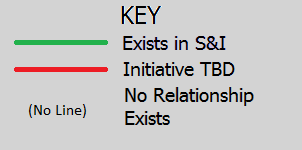

MUSICO allows you to view the relationships between the different parties involved in the healthcare ecosystem as they relate to Meaningful Use and Standards Development
Instructions:
- Left-Click on an actor to bring it to the center of the visualization tool
- Right-Click on a second actor to view the S&I initiatives that share the relationship between the two actors
